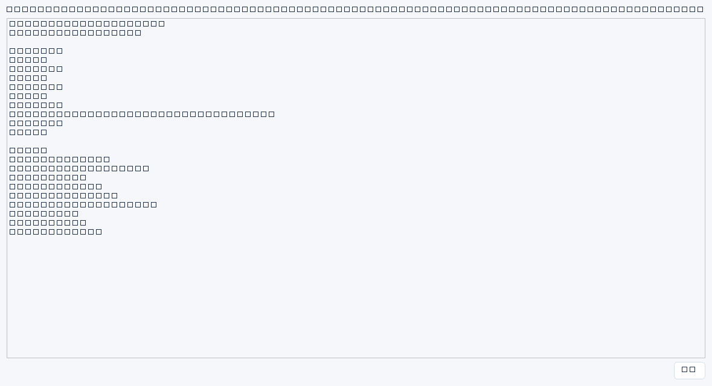

选择一条记录后点击“关联链条…”，系统按记录之间的关联字段（关联ID、来源ID、项目ID、父任务ID、整改任务ID、系统ID、人员ID、规划ID）双向展开，把事件、根因、变更、验证、复盘串成一条链，并列出缺口。
阶段划分
| 阶段 | 参与的模块 |
|---|---|
| 事件 | 运维事件 |
| 根因 | 风险台账、决策记录、需求池、系统、资产、权限、信息收集、人员、合同、预算 |
| 变更 | 变更管理 |
| 验证 | 备份恢复、指标记录、任务、考核、项目、长期规划 |
| 复盘 | 工作记录 |
- 选中记录 → 关联链条…，窗口列出起点、节点总数、各阶段节点与深度。
- 查看“缺口提示”：例如缺少变更记录、缺少验证证据或恢复演练记录、缺少复盘工作记录。
- 按提示去对应模块补齐记录；链条会随下一次刷新更新。
- 注意区分：事件里的“根因”文本框不算根因记录，仍需可核对的记录。
边界：“三阶段齐备”只表示记录层面齐全，不代表问题已解决；链条是只读视图，不会自动改状态、不会自动关闭风险。已归档记录不参与链条，深度最多4层，超出会被截断并提示。

